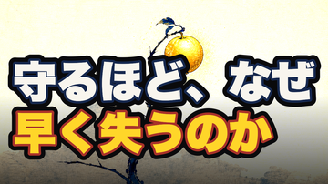
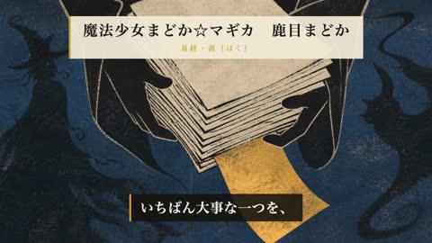
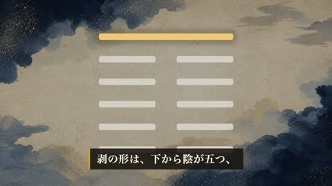
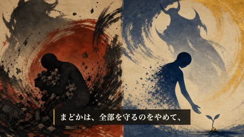
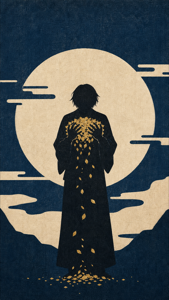
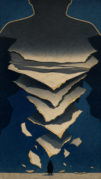
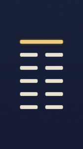
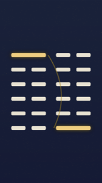
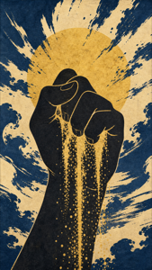
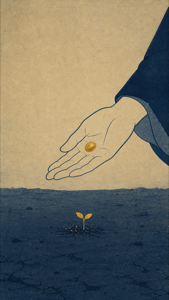

| 工程 | 状態 |
|---|---|
| 台本（fork独立採点93・冒頭A案で唐突さ解消） | ✅ 承認 |
| identity-audit（全カット"不明"＝法務PASS） | ✅ |
| 発音検証（杏子=きょうこ/陽=よう/卦=か/象=しょう/陰=いん/種=たね 等を修正） | ✅ 修正済 |
| timing / promise（冒頭overlay）/ mix（黒落ちなし） | ✅ |
| サムネ（新BOLD_BENCHシステム「守るほど、なぜ／早く失うのか」） | ✅ |
| 概要欄（description.txt） | ✅ |
| 通し視聴ゲート | ✅ 本人承認（おけ） |






| 工程 | 状態 |
|---|---|
| 台本 ＋ 一次情報ゲート（卦辞照合・作品事実web確認） | ✅ PASS |
| 絵カット4枚（木版浮世絵9:16・一般記号）＋ 六爻図2枚（剥/復 決定論） | ✅ |
| produce（音声→DepthFlow→字幕→レンダ） | ⛔ creative-harness vertical 3-run で停止 |
| PC確認ビューアをslug固定URL化（show-pin.sh・localhost:4521/<slug>/・並列で被らない・画像同梱） | ✅ |
| サムネを極太・多色・縁取りシステムへ格上げ（世の中ベンチ準拠・BOLD_BENCH既定化） | ✅ |
| share-to-phone を画像・動画同梱（ディレクトリ共有＋軽量プレビューMP4） | ✅ |
| 発音：再発語（剥/象辞/碩果/一陽来復）を reading_dict 昇格 | ✅ |
| short-artwork の 剥/剝（新字旧字）照合を修正 | ✅ |
releases/062/essay-062.mp4／サムネ＝releases/062/thumbnail.png／ショート＝content/shorts/sh42-haku-tonari/。